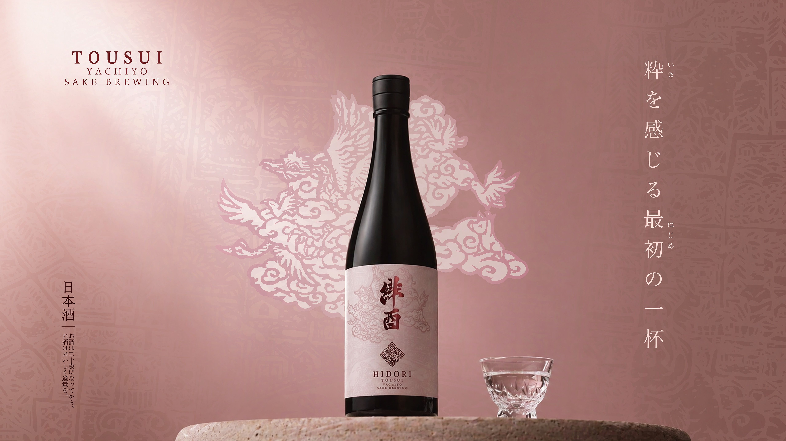
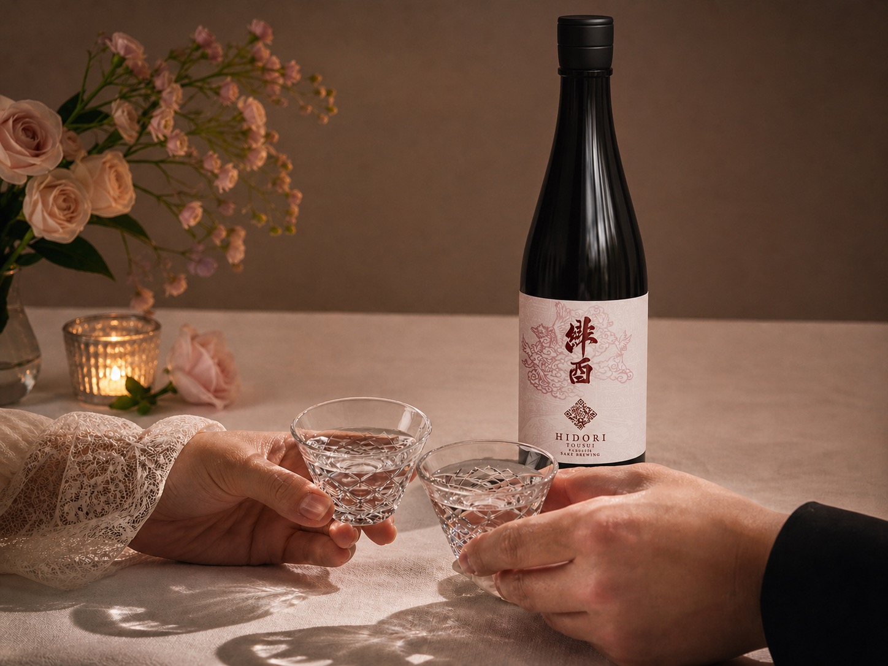
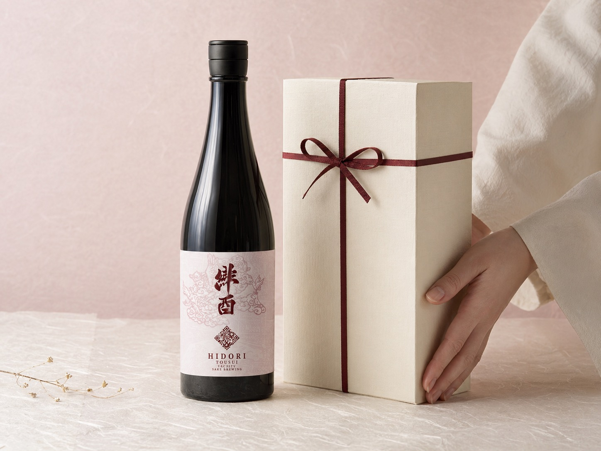
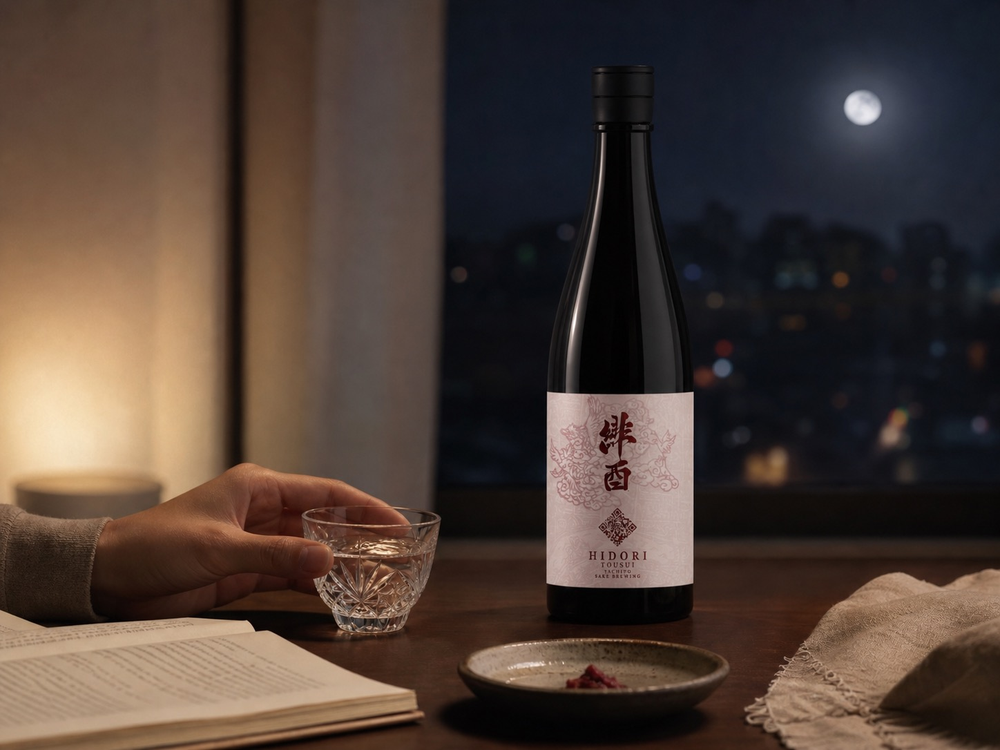
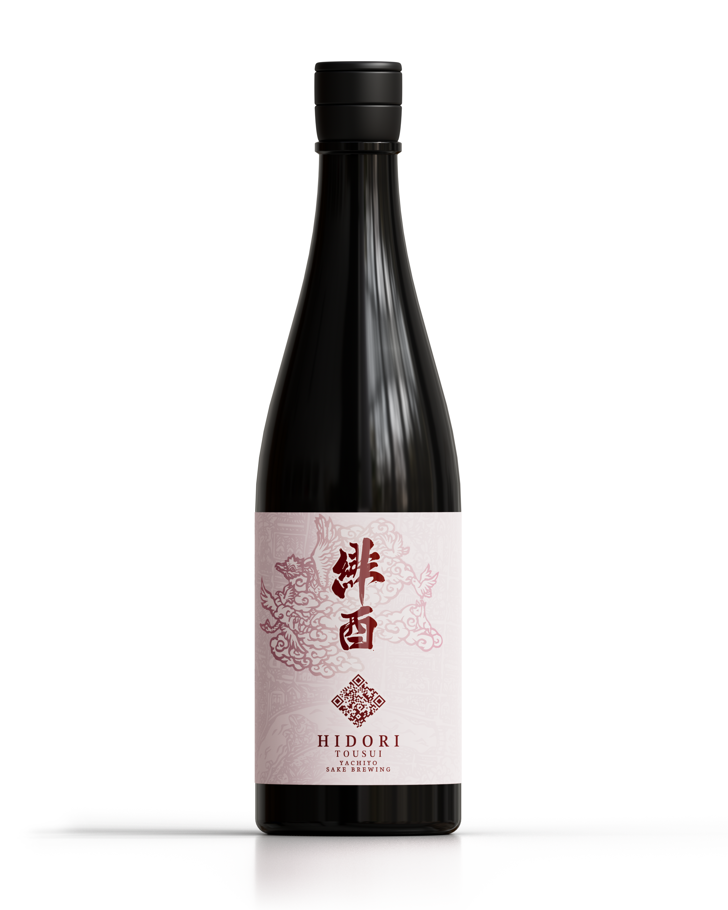
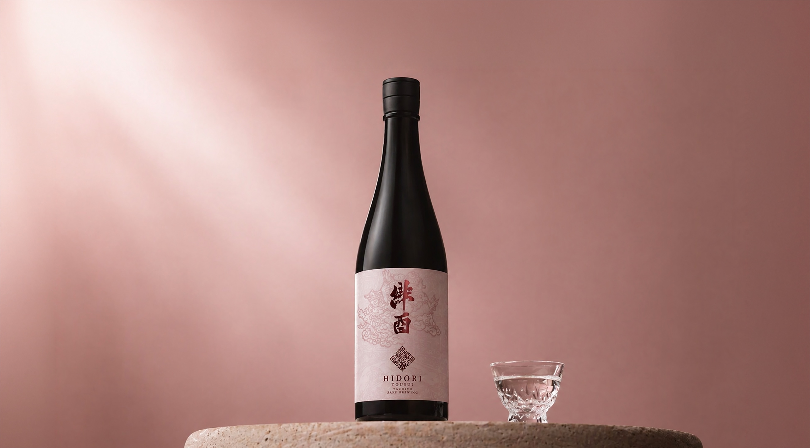
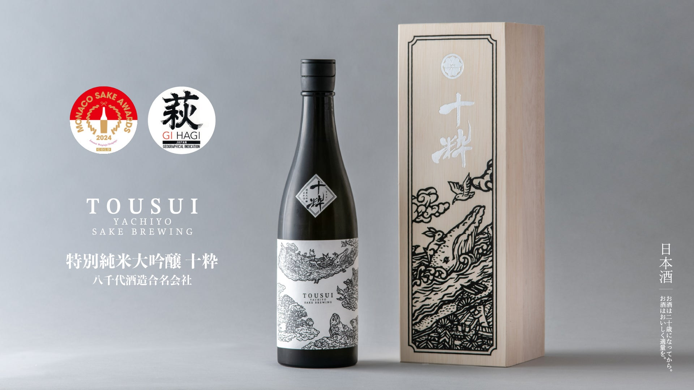

No. 01
130年超
1887年から続く蔵
山口・萩の地で、5代にわたり酒造りを守り継ぐ蔵元。

A Sip to Begin
たくさんの言葉より、ひと口の心地よさを。
緋酉は、そんな入口になりたいお酒です。
Why HIDORI
No. 01
130年超
山口・萩の地で、5代にわたり酒造りを守り継ぐ蔵元。
No. 02
GI萩
国に認定された萩の風土が育む、確かな品質を。
No. 03
100%
萩地域産の山田錦のみを使用した、純米大吟醸です。
No. 04
40%
米を磨き上げて引き出した、雑味のないクリアな味わい。
Three Scenes
ふだんの食卓から、特別な夜まで。
緋酉は、いろんな場面にそっと寄り添います。

Scene 01
グラスを合わせた瞬間、その夜が、すこし特別になる。

Scene 02
開けた瞬間の香りが、言葉のかわりに、ありがとうを。

Scene 03
一杯で、肩の力が抜ける。自分のための、静かな時間。
The Name
二つの文字に、萩という土地の物語を重ねました。

A Story from Hagi
白壁の町並みと静かな気配を残す、山口・萩。
その地の米と水、人の手が重なって、緋酉は生まれました。
グラスに注げば、香りがほどけ、ひと口で景色が灯る。
萩のひとときを、あなたの夜へ。
HI / Crimson
高位を彩った、深い赤。萩焼の「七化け」に宿る、炎のいろ。
TORI / Vessel
酒壺をかたどった、古い文字。実りと祝いを意味する、縁起のしるし。
Tasting Note
日本酒に詳しくなくても、ひと口で、おいしさが伝わるように。

ほどける香り。
やさしい甘み。
すっと消える、キレ。
冷やしてもよし、常温でもよし。
食事と並べても、お酒だけで楽しんでも、すっと馴染みます。
01
Aroma
花のよう
02
Sweetness
やさしい
03
Finish
心地よい
The Brewery
米づくりから酒づくりまで——一貫したものづくりが、緋酉のうしろにあります。

No. 01
山口県萩市で明治20年から、酒造りを続けてきた蔵元。
No. 02
地理的表示「GI萩」に認定された産地の米と水で醸しています。
No. 03
米を育てるところから酒を醸すところまでを、一つの仕事として。

難しい説明は、ひとまず横に置いて。
— 八千代酒造合名会社
まずは、一杯。
そこから、萩の風土が伝わる入口になれたら。
Product

HIDORI
純米大吟醸
2026年5月10日 発売（出荷は6月上旬から順次）
送料・返品 → 特定商取引法に基づく表記
20歳未満の飲酒は法律で禁じられています。
FAQ
2026年5月10日よりEC販売を開始します（出荷は6月上旬〜順次）。イベント販売の詳細は公式SNS・ECサイトでお知らせします。
やさしい甘みと心地よいキレで、日本酒が初めての方にもすっと馴染む味わいです。冷やしても常温でも、おいしく召し上がれます。
はい。記念日や手土産にお選びいただけます。包装・のしの対応はEC注文時にご指定ください。
送料・お届け・返品の規定は、ECサイトの「特定商取引法に基づく表記」をご確認ください。
表記を見る →
緋酉は気軽に楽しんでいただける入口の一本（¥9,800）。十粋は、自社栽培の山田錦を精米歩合27%まで磨いた、限定1,000本・紹介制の特別な一本（¥29,800）です。
十粋事務局（info@puresake-tousui.com）までお気軽にお問い合わせください。
